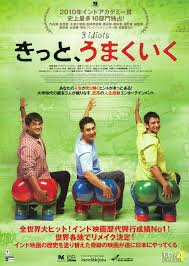
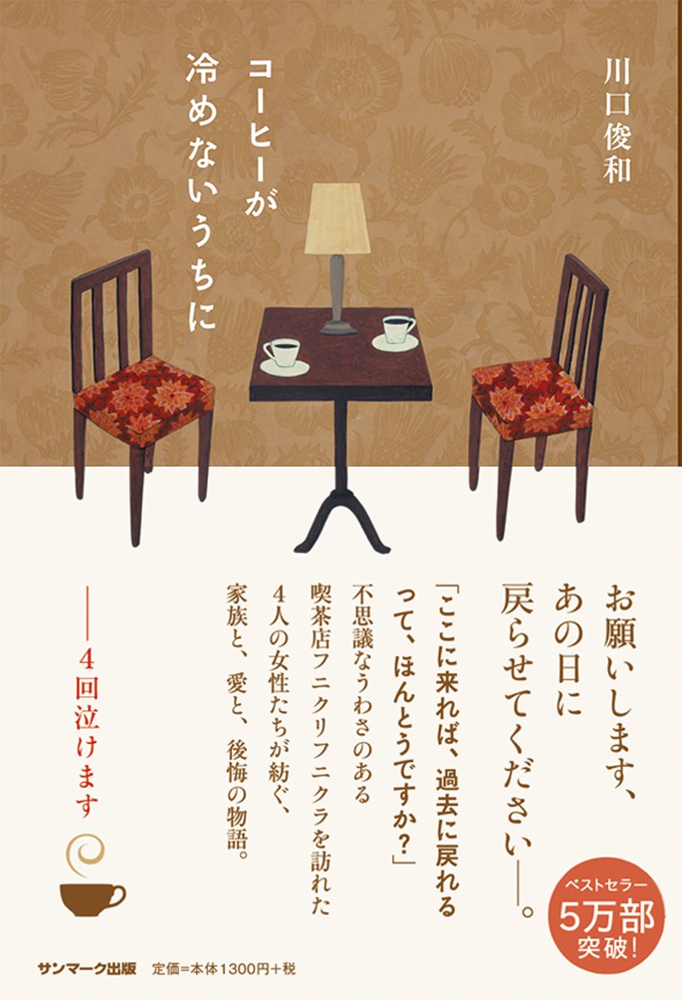

アニメ・マンガ
映画
小説
①アニメ・マンガ
『Re:ゼロから始める異世界生活』（リ・ゼロからはじめるいせかいせいかつ、Re: Life in a different world from zero）は、長月達平による日本のライトノベル。イラストは大塚真一郎が担当している。公式略称は「リゼロ」。
小説投稿サイト『小説家になろう』にて2012年4月より連載が始まり、MF文庫J（KADOKAWA）より2014年1月から刊行されている。また、『月刊コミックアライブ』において2014年6月号より書き下ろし短編小説『Re:ゼロから始める異世界生活 外伝』が掲載されている。
②映画

2009年の公開当時、インド映画歴代興行収入1位を記録した大ヒット映画[1]。インドの工科大学の寮を舞台にした青春劇であり、コメディ映画だが教育問題をテーマにしており、若者の自殺率の高さなども取り上げている。2010年インドアカデミー賞では作品賞をはじめ史上最多16部門を受賞した。
邦題の『きっと、うまくいく』は本作のキーワードである“Aal Izz Well”（アール・イーズ・ウェル）[2]を訳したものである。このフレーズの由来はイギリス統治時代のインドで夜警が街を見回りながら口にしていた言葉であるという。
スティーヴン・スピルバーグは「3回も観るほど大好きだ」と絶賛しており、
③小説

これ代官山で読んでボロ泣きした。めっちゃ面白い。
topへ戻る
- おっぱい？
- うんち！
- おっぱい！？
- うんち！！！